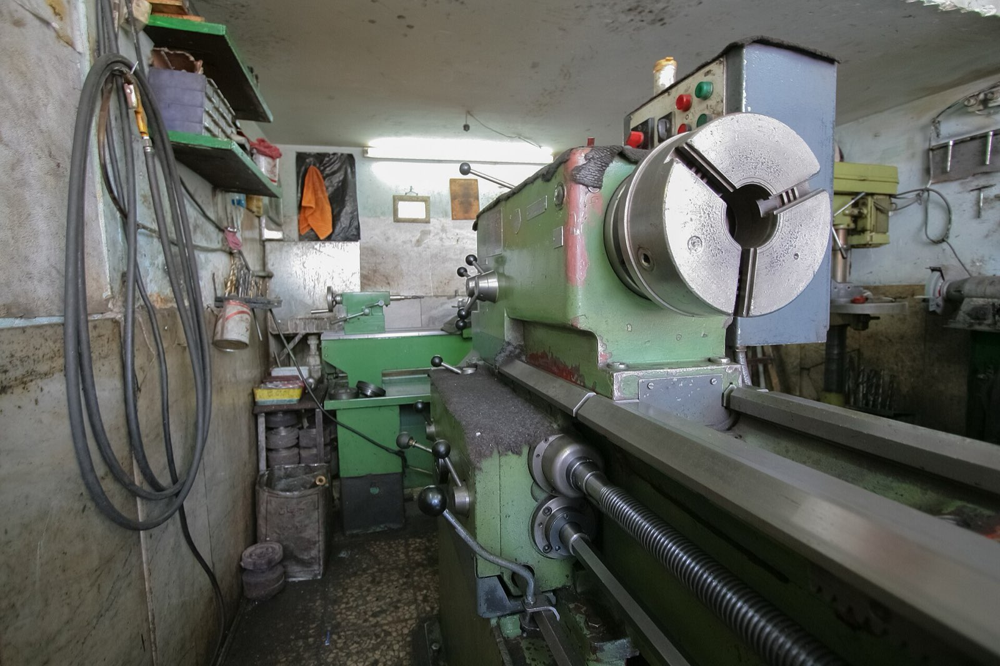

MDN 251 · YEAR 2 · SEMESTER 2
Machine Design I
From stress analysis to sized hardware: static and fatigue design methodology, shafts, keys, fasteners, and welded joints — the course where strength of materials starts buying parts.
11 lessons · 0 in the Core 60 · Primary texts:
- MIT OCW 2.72 Elements of Mechanical Design (ocw.mit.edu)
- NPTEL: Machine Design (nptel.ac.in)
Design methodology and factors of safety
Load cases, failure modes, and design margins chosen with reasons attached. Codes and standards as encoded experience. The difference between analysis and design stated plainly.
- Why is a factor of safety a statement about ignorance, not strength?
- Analysis versus design: what reverses between them?
Taught from — NPTEL: Machine Design
Static failure design
Von Mises and Tresca applied to component sizing. Stress concentrations included honestly. A bracket designed from load to drawing callout.
- Apply von Mises to a bracket's worst point: what inputs do you need?
- Why include Kt in static design of brittle parts but often not ductile ones?
Taught from — NPTEL: Machine Design
Fatigue design I: the S–N method
Endurance limits and the modification factors — surface, size, load, temperature, reliability. Where the knockdowns come from and why they stack. Infinite-life design for steel done properly.
- Name three endurance-limit knockdown factors and what each punishes.
- Why does a ground surface out-live a machined one in fatigue?
Taught from — NPTEL: Machine Design; Callister & Rethwisch, Ch. 8
Fatigue design II: mean stress and cumulative damage
Goodman and Gerber treatments of mean stress. Miner's rule with its known dishonesty acknowledged. Fluctuating-load components assessed end to end.
- What does the Goodman line trade between mean and alternating stress?
- State Miner's rule and its known dishonesty.
Taught from — NPTEL: Machine Design
Shaft design
Combined bending and torsion under fatigue; deflection and critical-speed checks. Shoulders, keyways, and their concentration costs. A pump shaft sized and detailed — the pathway's signature component.
- Which loads combine on a pump shaft, and which failure mode usually governs?
- Why do shoulders and keyways decide a shaft's fatigue life?
Taught from — NPTEL: Machine Design
Keys, splines, and retaining hardware
Key sizing by shear and bearing. Splines and interference fits as torque paths. Retaining rings and their groove-stress fine print.
- Size a key: which two failure checks apply?
- When does an interference fit beat a key for torque?
Taught from — NPTEL: Machine Design
Threaded fasteners and bolted joints
Bolt mechanics: preload, joint stiffness, and the load-sharing triangle. Torque–preload relations and their scatter. Gasketed-joint implications for every flange a plant owns.
- Why does preload protect a bolt from fatigue?
- What fraction of external load does a stiff joint's bolt actually see?
Taught from — NPTEL: Machine Design
Welded joint design
Fillet weld sizing under direct and torsional shear. Weld groups treated like bolt groups. Fatigue of welds — why the toe is where cracks start.
- Why do fillet welds fail at the throat, and what area do you size?
- Why do weld toes start fatigue cracks?
Taught from — NPTEL: Machine Design
Springs
Helical spring stress and rate derived; solid height and buckling checks. Fatigue of springs under fluctuating load. Valve and relief springs as working examples.
- What stress does a helical spring's wire actually carry?
- What does solid height check against?
Taught from — NPTEL: Machine Design
Power screws
Torque to raise and lower; efficiency and self-locking conditions derived from the friction analysis. Acme threads and collar friction. Jacks, actuators, and valve stems quantified.
- Derive when a power screw self-locks.
- Why is a screw jack's efficiency so poor — and why is that useful?
Taught from — NPTEL: Machine Design
Design project: a driven shaft assembly
Integrative project: size the shaft, keys, bolts, and welds of a belt-driven assembly against static and fatigue criteria. Calculations documented for review. The pattern of defensible design work.
- In the shaft-assembly project, which element failed first on paper, and what did you change?
- What must design documentation let a reviewer do?
Taught from — NPTEL: Machine Design